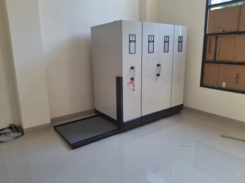
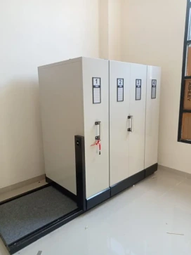
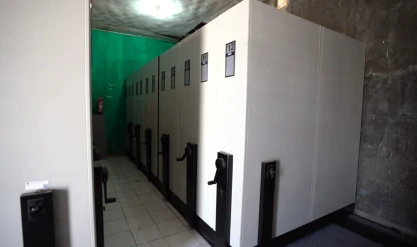
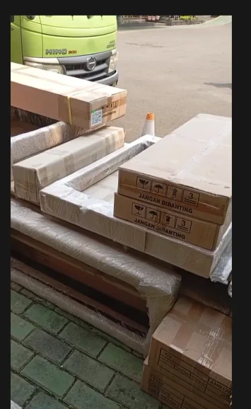
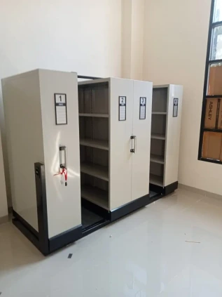
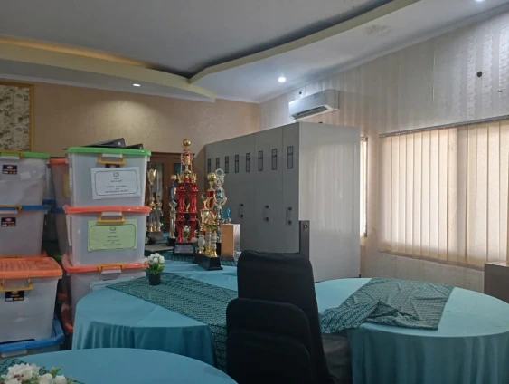
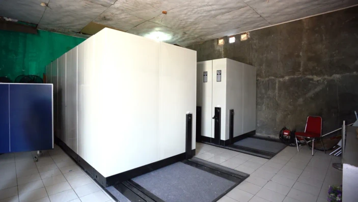
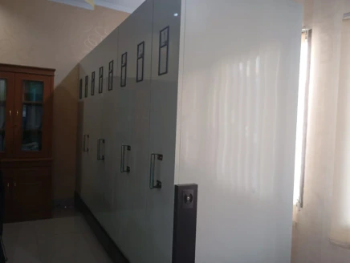
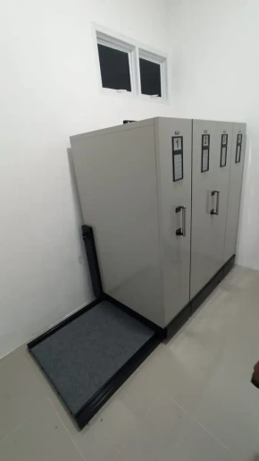
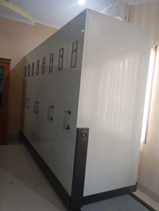

Portofolio Proyek Kami
Foto pemasangan mobile file Zeco di kantor, perusahaan, dan sekolah.

PerkantoranPemasangan selesai di ruang arsip kantorRak bergeser di atas rel, satu lorong terbuka saat Anda butuh dokumen. Ruangan tetap lega.
PerkantoranUnit bernomor dengan alas lantai berkarpetNomor dan label di tiap unit membantu petugas menemukan dokumen dengan cepat. Alas lantai berkarpet menjaga area rel tetap rapi.
Perusahaan dan IndustriDeretan unit bernomor dengan roda putarRoda putar menggeser unit dengan tenaga ringan, jadi arsip dalam jumlah besar tetap mudah dijangkau. Ruang sempit terpakai penuh.
PengirimanKomponen dikemas rapi dan siap diantarRel dan unit kami bungkus dengan plastik dan dus berlapis, supaya aman selama perjalanan sampai ke lokasi Anda.
PerkantoranRak terbuka, isi tertata per unitSetiap unit punya rak sendiri untuk map dan boks arsip. Lorong baru terbuka saat Anda butuh dokumennya.
SekolahMobile file di ruang arsip sekolahDokumen administrasi dan laporan sekolah tersimpan dalam satu ruangan, tidak tercecer di banyak lemari.
Perusahaan dan IndustriDua blok mobile file di ruang arsip perusahaanDua blok unit berdiri di satu ruangan, masing-masing dengan rel dan alas lantai sendiri.
SekolahDeretan unit bernomor, tampak sampingUnit berjajar memanjang di sisi dinding. Tiap pintu punya nomor dan label, jadi dokumen mudah dicari.
PerkantoranRuang arsip bersih dengan rel terpasangUnit mobile file berdiri di atas rel dengan alas lantai berkarpet, di ruangan yang bersih dan lega.
SekolahRangkaian unit sepanjang dinding ruangPintu bernomor memanfaatkan seluruh sisi dinding, jadi arsip yang tersimpan banyak tanpa makan banyak lantai.